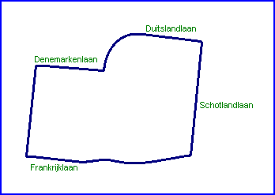

| Length | |
| Direction | |
Contact Information |
|
| Address |
Bestuur
Oranje-Race Boskoop |
| Telephone | |
| Website | http://www.oranje-race.tk |
Boskoop
Historic Demonstration Circuit

| Length | |
| Direction | |
Contact Information |
|
| Address |
Bestuur
Oranje-Race Boskoop |
| Telephone | |
| Website | http://www.oranje-race.tk |
Lasted Updated: 04 August 2003 19:49:26 GMT Daylight Time